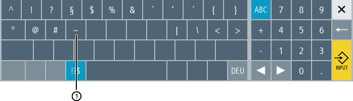

Wenn Sie die Umschalttaste Buchstaben und Sonderzeichen antippen, wechselt die Tastaturbelegung zu den Sonderzeichen.
① | <Tilde> |
Mit der Taste <Tilde> geben Sie im Editor oder in alphanumerischen Eingabefeldern das Sonderzeichen <Tilde> ein. In numerischen Eingabefeldern ändern Sie mit der Taste <Tilde> das Vorzeichen einer Zahl zwischen Plus und Minus.
Siehe auch:
Virtuelle Tastatur